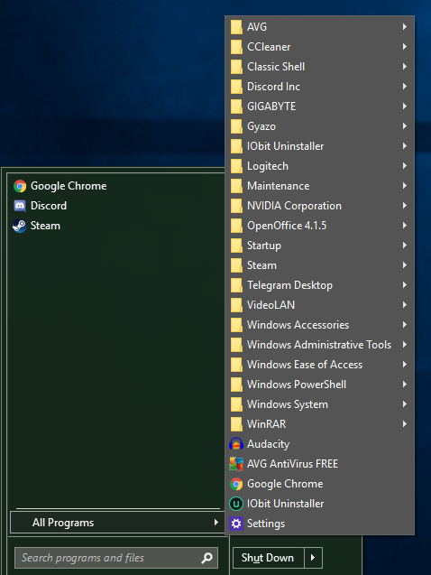

| Classic Shell http://www.classicshell.net/forum/ |
|
| Some software not showing up in "all programs" http://www.classicshell.net/forum/viewtopic.php?f=7&t=8320 |
Page 1 of 1 |
| Author: | R176 [ Tue Mar 06, 2018 8:51 am ] |
| Post subject: | Some software not showing up in "all programs" |
I just did a fresh install of windows and am having a strange problem. Some apps aren't showing up under "all programs" in classic shell. For example, I have spotify installed as well as the Corsair Utility Engine, but here's what I see.  The pinned software on the left only intentionally has 3 items on it currently, I'm adding more as I set up the fresh install of windows. The software is indeed installed and in the Program Files or Program Files(x86) folder respectively. Windows 10 home fresh install as of a couple hours ago, so other software freshly installed. Just reinstalled Classic Shell, no luck. I am aware I can navigate to the .exe in the program files folder, but I'd rather not have to do that. Hopefully you guys can tell me how to fix this! Thanks <3. Long time user of classic shell (since early windows 8) and love it. |
|
| Author: | Jcee [ Wed Mar 07, 2018 2:07 am ] |
| Post subject: | Re: Some software not showing up in "all programs" |
Classic shell uses the same folder that is used in windows 7 C:\ProgramData\Microsoft\Windows\Start Menu\Programs and C:\Users\<Enter Your Username>\AppData\Roaming\Microsoft\Windows\Start Menu\Programs If the program doesn't add a shortcut to one of these folders, it wont get added to classic shell. This was less of a problem in the windows 7 days, but since neither windows 8, nor 10 use this folder; many newer programs, don't bother with making their own shortcuts. Sadly creating your own shortcuts is the only real solution. |
|
| Page 1 of 1 | All times are UTC - 8 hours [ DST ] |
| Powered by phpBB® Forum Software © phpBB Group https://www.phpbb.com/ |
|